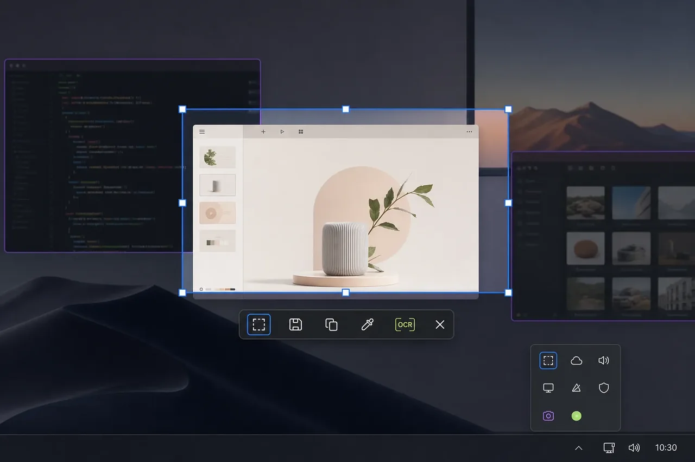

1280 px 720 px
05 / OVERLAY / CAPTURE WORKFLOW
Screenshot
不打断当前工作的快速截图工具
一款真正以“快”为核心的常驻托盘截图工具：快捷键直接进入上次使用的模式，选完即可复制或保存，不用先打开主窗口，也不让 OCR 阻塞截图主流程。
□矩形 ▱窗口 ◷延时 ⌾取色 ⇩保存 / 复制 AaOCR
X 0640 Y 0360 RGB 20 23 27
CAPTURE_001.PNG
选完，立即得到结果。
看似只是一个矩形
截图看似简单，真正的难点却集中在跨屏边界：DPI 缩放、负坐标、窗口阴影和权限差异都会让选区与最终像素错位。若把 OCR、历史等重功能塞进主路径，还会直接破坏工具最重要的即时反馈。
让坐标、像素与动作对齐
用 BreFlow 统一显示器与窗口枚举，平台 capture 负责像素获取，PNG 管线负责保存；触发后直接进入遮罩选择，工具条只承载保存、复制与可选动作。OCR 拆到独立后端异步执行，平台能力不足时明确降级而不是静默失败。
06 QUICK ACTIONS
主路径里，只留下必要动作
矩形与窗口截图
01快捷键直接进入上次模式
02剪贴板复制与 PNG 保存
033 / 5 / 10 秒延时截图
04即时取色与轻量浮动工具条
05DPI、多显示器和负坐标校正
06MODE PALETTE
每种能力都在主流程之外待命
矩形
拖拽选区与像素级边界调整
↗窗口
悬停识别并包含窗口阴影
↗延时
3 / 5 / 10 秒倒计时触发
↗取色
选区过程即时读取屏幕颜色
↗保存 / 复制
主路径中的两个即时结果
↗OCR
可选动作，独立后端异步执行
↗后续演进 · 以下为路线图，具体阶段以项目说明为准。
DELAY 03 SECONDS
MVP
先把每一次截图做快、做准
区域与窗口截图 / 复制到剪贴板和 PNG 保存 / 3 / 5 / 10 秒延时 / 屏幕取色
V1
扩展能力，但不拖慢主流程
滚动截图与多屏边界优化 / 轻量标注与历史记录 / OCR 可选动作 / 更多平台降级与权限引导
截图工具不该打断截图。
- 01
触发后直接进入遮罩选择，不先打开主窗口
- 02
正确处理 DPI、多显示器、负坐标与窗口阴影
- 03
选区跟手且无明显延迟，保存和复制优先完成
- 04
Wayland、macOS 权限和受保护窗口均提供明确降级提示